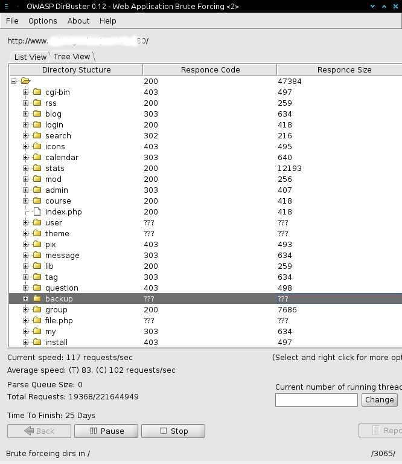
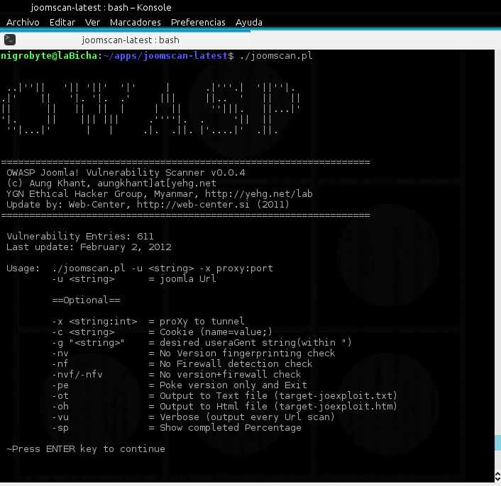
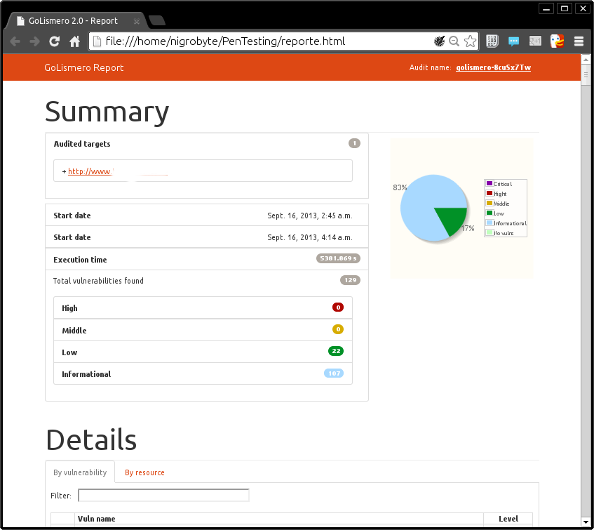

EMPRENDEDOR TECNOLOGICO Y COOPERATIVO
Seguridad Informática con Software Libre
Actualidad Hacker
OWASP
Open Web Application Securit Project
OWASP Tools Project/es
DirBuster
JoomScan
GoLismero
Top 10 de OWASP
A10 Unvalidated Redirects and Forwards
Los atacantes aprovechan el uso de redirecciones de sitios web a otros sitios utilizando información no confiable (untrusted) para redirigir a las víctimas a sitios de phishing o que contienen malware.
ejemplo: phishing
http://www.example.org/redirigir.php?url=phishing.org
A9 Using Known Vulnerable Components
Corresponde a la explotación de librerías, frameworks y otros componentes vulnerables por parte de un atacante con el fin de obtener acceso o combinar con otros ataques.
Ejemplo: modulos y plugins de terceros en CMS
A8 Cross-Site Request Forgery (CSRF)
Permite a un atacante generar peticiones sobre una aplicación vulnerable a partir de la sesión de la víctima.
Explota la confianza que sitio tiene en un usuario particular
http://example1.com/usuarios/eliminar/63

A7 Missing Function Level Access Control
Corresponde a la falta de controles desde el servidor, permitiendo a un posible atacante acceder a funciones a las que no debería.
Ejemplo de esta falla de restricción de acceso a URL
http://ejemplo.com/app/admin_getappInfo
A6 Sensitive Data Exposure
Se refiere a la protección incorrecta de datos críticos tales como, por ejemplo, números de tarjetas de crédito, contraseñas, entre otros.
Ejemplo:- malas configuraciones en el decifrado de contraseñas en base de datos.
- backups con informacion de mas.
A5 Security Misconfiguration
Corresponde a configuraciones no adecuadas que pueden impactar en la seguridad de la propia aplicación.
Ejemplos
- Cuentas predeterminadas
- Archivos o directorios no protegidos
A4 Insecure Direct Object References
Puede derivar en un acceso no autorizado a información crítica debido a errores en el diseño o desarrollo.
Ejemplo: Datos no verificados en una consulta sql
http://example.com/app/accountInfo?acct=miUser
http://example.com/app/accountInfo?acct=otroUser
A3 Cross-Site Scripting (XSS)
Ocurre cuando existe validación pobre de la información ingresada por el atacante.
Ejemplo
- phishing
- robo de credenciales
- ejecucion de acciones automaticas
javascript:while(1)alert("Este mensaje saldra indefinidamente");
A2 Broken Authentication and Session Management
Corresponde al mal manejo de las sesiones en aquellas aplicaciones que utilizan autenticación.
Ejemplo:
- No se establece tiempos de desconexion en la aplicacion
- Identificadores de seseion en urls
http://example.com/sale/saleitems;jsessionid=2P0OC2JDPXM0OQSNDLPSKHCJUN2JV?dest=Hawaii
A1 Injection
Corresponde a las inyección de código, siendo las inyecciones SQL una de las más comunes.
Ejemplos
- SQLi
- LDAPi (inyecciones en protocolo ligero de accedo a directorios
A1 Injection
Inyección SQL es un método de infiltración de código intruso que se vale de una vulnerabilidad informática presente en una aplicación en el nivel de validación de las entradas para realizar consultas a una base de datos.
El origen de la vulnerabilidad radica en el incorrecto chequeo y/o filtrado de las variables utilizadas en un programa que contiene, o bien genera, código SQL. Es, de hecho, un error de una clase más general de vulnerabilidades que puede ocurrir en cualquier lenguaje de programación o script que esté embebido dentro de otro.
Inyección SQL
"SELECT * FROM usuarios WHERE nombre = '" + nombreUsuario + "';"
' or '1'='1
"SELECT * FROM usuarios WHERE nombre = '' or '1'='1';"
Inyección SQL
"SELECT * FROM usuarios WHERE nombre = '" + nombreUsuario + "';"
x'; DROP TABLE usuarios; --
"SELECT * FROM usuarios WHERE nombre = 'x'; DROP TABLE usuarios; --';"
DEMO
Inyección SQL
Blind SQL Injection
Blind SQL Injection también conocido como Inyección de SQL a ciegas. La idea es basarse en los comportamiento de las consultas que pueden dar dos posibles resultados True o False
Blind SQL Injection
http://dominio.com/noticia.php?id=2
SELECT titulo, descripcion FROM noticia WHERE ID = 2
http://dominio.com/noticia.php?id=2 and 1=2
SELECT titulo, descripcion FROM noticia WHERE ID = 2 and 1=2
http://dominio.com/noticia.php?id=2 and 1=1